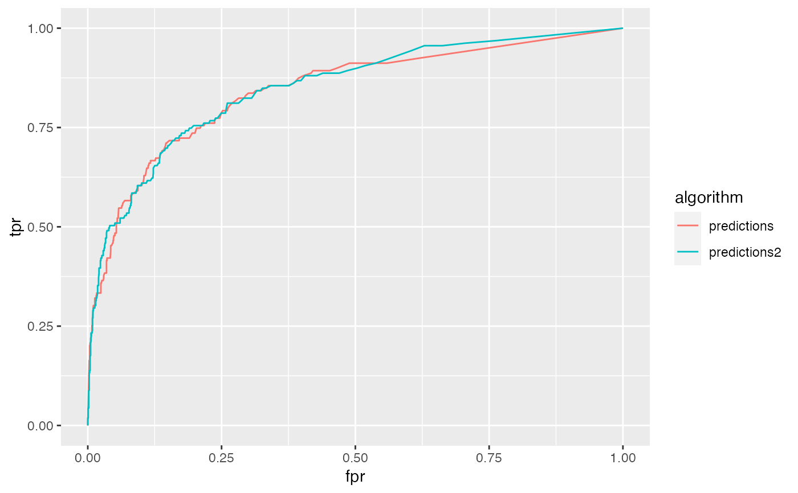
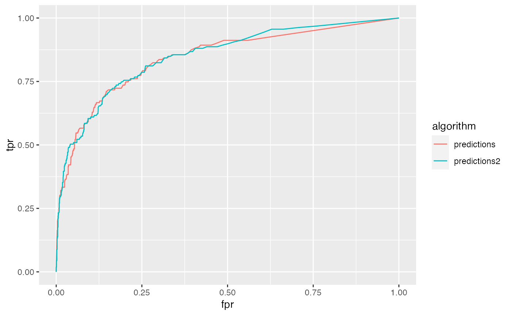

Tidy summarizes information about the components of a model. A model component might be a single term in a regression, a single hypothesis, a cluster, or a class. Exactly what tidy considers to be a model component varies across models but is usually self-evident. If a model has several distinct types of components, you will need to specify which components to return.
# S3 method for roc tidy(x, ...)
| x | An |
|---|---|
| ... | Additional arguments. Not used. Needed to match generic
signature only. Cautionary note: Misspelled arguments will be
absorbed in |
A tibble::tibble() with columns:
The cutoff used for classification. Observations with predicted probabilities above this value were assigned class 1, and observations with predicted probabilities below this value were assigned class 0.
False positive rate.
The true positive rate at the given cutoff.
library(AUC)#>#>#> #>#> #> #>#> # A tibble: 220 x 3 #> cutoff fpr tpr #> <dbl> <dbl> <dbl> #> 1 1 0 0 #> 2 1 0.00262 0.164 #> 3 0.972 0.00350 0.164 #> 4 0.968 0.00350 0.182 #> 5 0.964 0.00350 0.189 #> 6 0.96 0.00350 0.201 #> 7 0.932 0.00437 0.201 #> 8 0.91 0.00437 0.208 #> 9 0.908 0.00525 0.208 #> 10 0.902 0.00525 0.214 #> # … with 210 more rows# compare the ROC curves for two prediction algorithms library(dplyr) library(tidyr) rocs <- churn %>% pivot_longer(contains("predictions"), names_to = "algorithm", values_to = "value" ) %>% nest(data = -algorithm) %>% mutate(tidy_roc = purrr::map(data, ~ tidy(roc(.x$value, .x$labels)))) %>% unnest(tidy_roc) ggplot(rocs, aes(fpr, tpr, color = algorithm)) + geom_line()